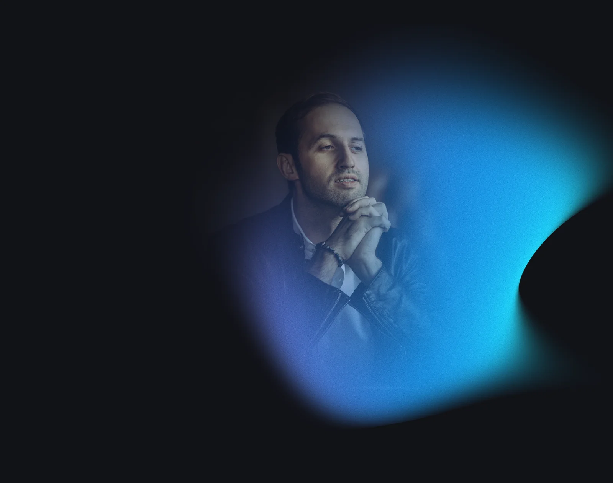

Стань последователем ранних подъемов и медитации
7-ми дневный практикум
Присоединиться
0₽ 30 000₽
Андрей Шишкин
спикер TED и Сколково
спикер TED и Сколково

Что даст практикум?
Поймешь как избавляться от страхов и стать более уверенным в себе
Повысишь продуктивность и эффективность
Станешь счастливее и раскроешь свой потенциал
1000
Уже более 1000 человек прошли этот практикум
Уже более 1000 человек прошли этот практикум
За счет чего достигается эффективность метода?
Регулярная медитация на проработку страхов и ограничений
Ранний подьем (до 6:30), без будильника
Выявление своего вектора развития
Каждодневная работа в кругу единомышленников
Отзывы